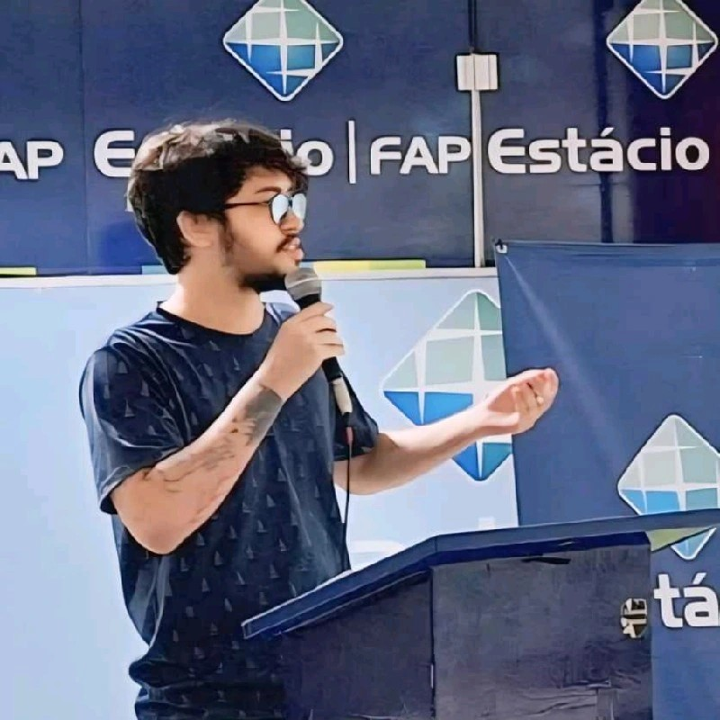

Sobre mim
Olá, meu nome é Ruan Guilherme, tenho 24 anos e sou estudante de Tecnologia, desenvolvedor full stack e pesquisador sobre a sinergia entre dispositivos IoT e Cloud Computing. Além disso, sou músico nas horas vagas.
Experiência Profissional
- Desenvolvedor Front-End - Secretaria Municipal do Meio Ambiente (Mapa Climático de Belém) - (Ago/2024 - Dez/2024)
- Pesquisador - Iniciação Científica - PIBIC - (Ago/2024 - Presente)
- Estagiário Desemvolvimento Web - Collapse Store (Jun/2023 - Dez/2024)
- Assistente Administrativo - Grupo Cynthia Charone (Mar/2022 - Jan/2025)
- Estagiário Administrativo - Centro Clínico de Reabilitação do Pará (Dez/2021 - Mar/2022)
Formação Acadêmica
- Bacharel em Sistemas de Informação - Estácio FAP (2023 - Previsão de Conclusão: 2026)
Cursos e Certificações
- Desenvolvedor Front-End - Estácio FAP
- Desenvolvedor Back-End - Estácio FAP
- Desenvolvimento em Python - Udemy
- Java: Spring e Spring Boot - Udemy
- JavaScript e TypeScript - Eurodata
- Desenvolvimento WEB - Estácio FAP
- Análise de Dados com Power BI - Estácio FAP
- Pacote Office Completo - Espaço Profissionalizante da Amazônia
Idiomas
- Inglês - Fluente
- Alemão - Intermediário